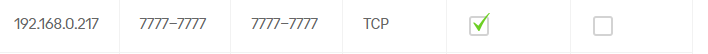

Hallo ich habe bei meiner Internet Fiber Box2 den Port 7777 Freigeschalten. Ich habe eine IPv4 Adresse und auf der seite https://www.yougetsignal.com/tools/open-ports/ gechecked ob der Port freigegeben ist.
Habt Ihr Ideen wie das genau funktionert?
